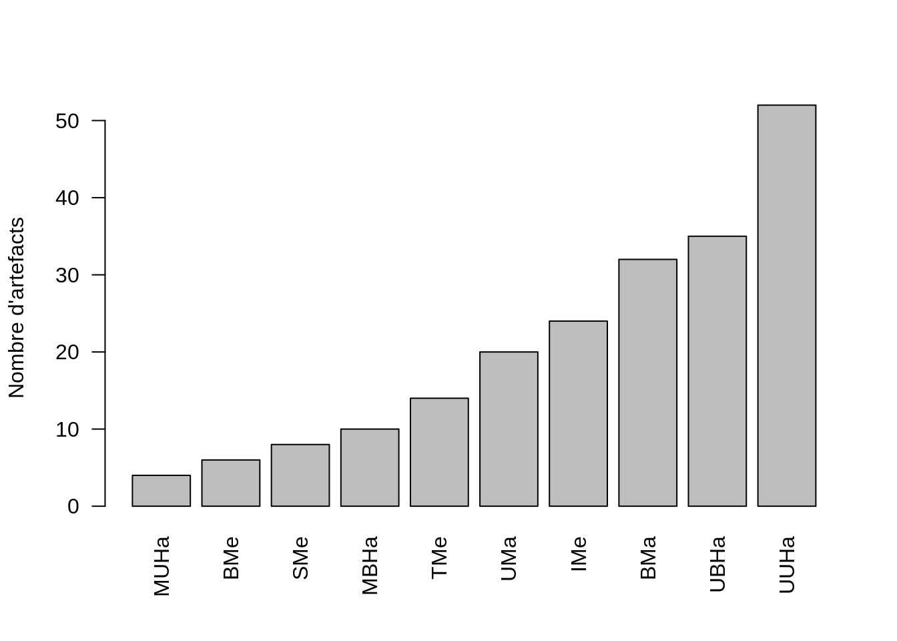
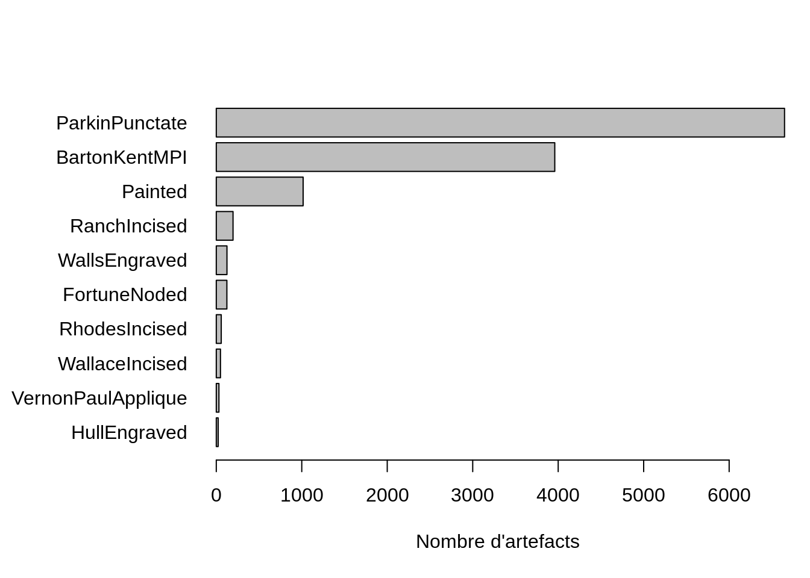
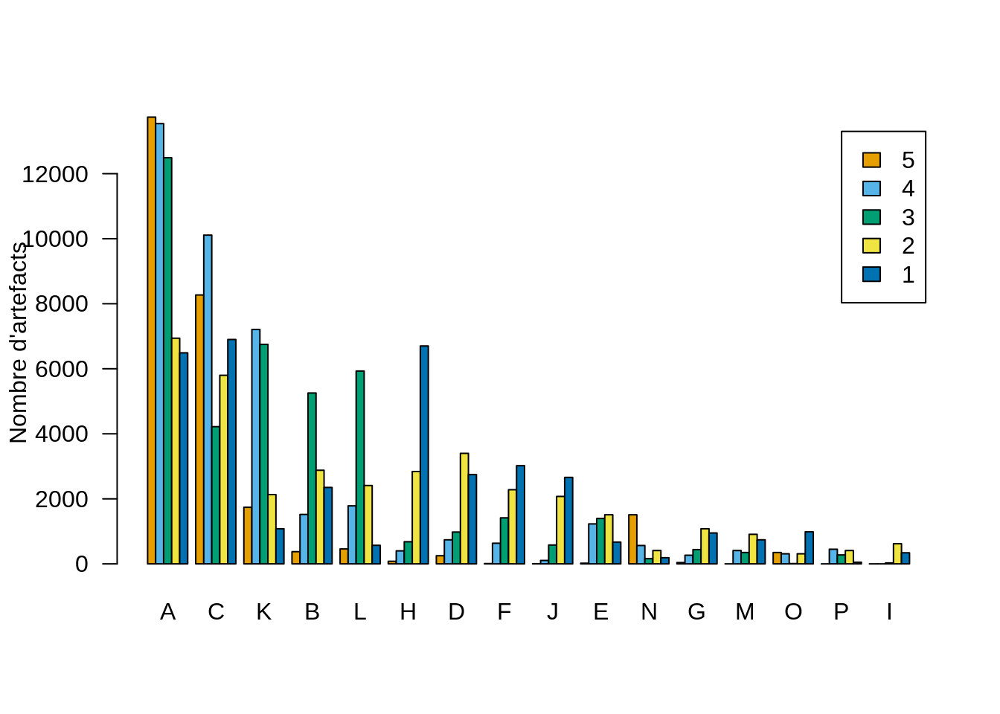

17 Représentations
17.1 Représenter des quantités
On peut créer un diagramme en barres à l’aide de la fonction barplot(), dont l’argument height accepte un vecteur ou une matrice permettant de décrire les barres qui composent le graphique.
# Charger les données depuis le package folio
data(chevelon, package = "folio")
# Calculer la somme de chaque colonne (type d'artefact)
# Trier dans l'ordre croissant
chevelon_total <- sort(colSums(chevelon))
barplot(
height = chevelon_total,
ylab = "Nombre d'artefacts",
las = 2 # étiquettes perpendiculaires aux axes
)
# Charger les données depuis le package folio
data(mississippi, package = "folio")
# Calculer la somme de chaque colonne (type d'artéfact)
# Trier dans l'ordre croissant
mississippi_total <- sort(colSums(mississippi))
# Ajuster les marges autour du graphique
# (permet de ne pas tronquer les étiquettes)
par(mar = c(5, 9, 4, 1) + 0.1)
barplot(
height = mississippi_total,
horiz = TRUE, # dessiner les barres horizontalement
xlab = "Nombre d'artefacts",
las = 1 # étiquettes des axes horizontales
)
# Charger les données depuis le package folio
data(compiegne, package = "folio")
# Déterminer l'ordre des colonnes à partir de leurs sommes
# (ici dans l'ordre décroissant)
compiegne_order <- order(colSums(compiegne), decreasing = TRUE)
# Permuter les colonnes
compiegne_sorted <- compiegne[, compiegne_order]
barplot(
height = as.matrix(compiegne_sorted), # doit être une matrice
col = c("#E69F00", "#56B4E9", "#009E73", "#F0E442", "#0072B2"),
legend.text = rownames(compiegne),
beside = TRUE,
ylab = "Nombre d'artefacts",
las = 1
)